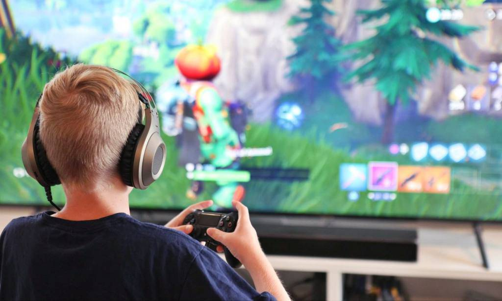

Los videojuegos podrían mejorar las habilidades motoras, el tiempo de reacción e incluso el rendimiento académico de un niño, pero una nueva investigación muestra que jugarlos en exceso puede vincularse con problemas sociales y conductuales. Investigadores españoles encontraron que cualquier mejora en las habilidades vinculadas con los videojuegos en los niños de 7 a 11 años comenzaba a llegar a su límite tras unas ocho horas de juego a la semana. Y los que jugaban nueve o más horas a la semana eran más propensos a tener problemas sociales y conductuales.
Tu casa
Casa de tus amigos
Casa de tus primos
